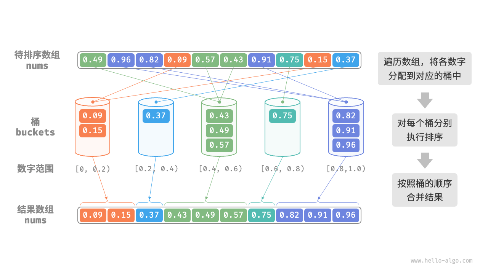
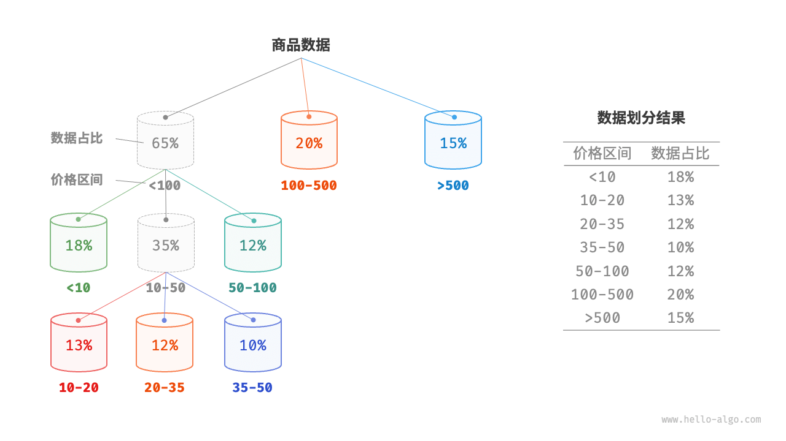
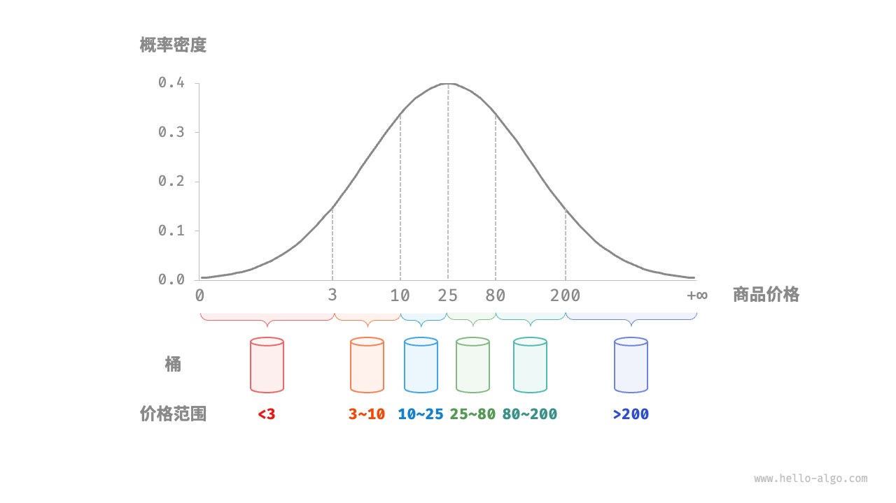

桶排序
前述几种排序算法都属于“基于比较的排序算法”，它们通过比较元素间的大小来实现排序。此类排序算法的时间复杂度无法超越 $O(n \log n)$ 。接下来，我们将探讨几种“非比较排序算法”，它们的时间复杂度可以达到线性阶。
「桶排序 bucket sort」是分治策略的一个典型应用。它通过设置一些具有大小顺序的桶，每个桶对应一个数据范围，将数据平均分配到各个桶中；然后，在每个桶内部分别执行排序；最终按照桶的顺序将所有数据合并。
算法流程
考虑一个长度为 $n$ 的数组，其元素是范围 $[0, 1)$ 内的浮点数。桶排序的流程如下图所示。
- 初始化 $k$ 个桶，将 $n$ 个元素分配到 $k$ 个桶中。
- 对每个桶分别执行排序（这里采用编程语言的内置排序函数）。
- 按照桶从小到大的顺序合并结果。

代码如下所示：
"Python"
def bucket_sort(nums: list[float]): """桶排序""" // 初始化 k = n/2 个桶，预期向每个桶分配 2 个元素 k = len(nums) // 2 buckets = [[] for _ in range(k)] // 1. 将数组元素分配到各个桶中 for num in nums: // 输入数据范围为 [0, 1)，使用 num * k 映射到索引范围 [0, k-1] i = int(num * k) // 将 num 添加进桶 i buckets[i].append(num) // 2. 对各个桶执行排序 for bucket in buckets: // 使用内置排序函数，也可以替换成其他排序算法 bucket.sort() // 3. 遍历桶合并结果 i = 0 for bucket in buckets: for num in bucket: nums[i] = num i += 1"C++"
/* 桶排序 */ void bucketSort(vector<float> &nums) { // 初始化 k = n/2 个桶，预期向每个桶分配 2 个元素 int k = nums.size() / 2; vector<vector<float>> buckets(k); // 1. 将数组元素分配到各个桶中 for (float num : nums) { // 输入数据范围为 [0, 1)，使用 num * k 映射到索引范围 [0, k-1] int i = num * k; // 将 num 添加进桶 bucket_idx buckets[i].push_back(num); } // 2. 对各个桶执行排序 for (vector<float> &bucket : buckets) { // 使用内置排序函数，也可以替换成其他排序算法 sort(bucket.begin(), bucket.end()); } // 3. 遍历桶合并结果 int i = 0; for (vector<float> &bucket : buckets) { for (float num : bucket) { nums[i++] = num; } } }"Java"
/* 桶排序 */ void bucketSort(float[] nums) { // 初始化 k = n/2 个桶，预期向每个桶分配 2 个元素 int k = nums.length / 2; List<List<Float>> buckets = new ArrayList<>(); for (int i = 0; i < k; i++) { buckets.add(new ArrayList<>()); } // 1. 将数组元素分配到各个桶中 for (float num : nums) { // 输入数据范围为 [0, 1)，使用 num * k 映射到索引范围 [0, k-1] int i = (int) (num * k); // 将 num 添加进桶 i buckets.get(i).add(num); } // 2. 对各个桶执行排序 for (List<Float> bucket : buckets) { // 使用内置排序函数，也可以替换成其他排序算法 Collections.sort(bucket); } // 3. 遍历桶合并结果 int i = 0; for (List<Float> bucket : buckets) { for (float num : bucket) { nums[i++] = num; } } }
算法特性
桶排序适用于处理体量很大的数据。例如，输入数据包含 100 万个元素，由于空间限制，系统内存无法一次性加载所有数据。此时，可以将数据分成 1000 个桶，然后分别对每个桶进行排序，最后将结果合并。
- 时间复杂度为 $O(n + k)$ ：假设元素在各个桶内平均分布，那么每个桶内的元素数量为 $\frac{n}{k}$ 。假设排序单个桶使用 $O(\frac{n}{k} \log\frac{n}{k})$ 时间，则排序所有桶使用 $O(n \log\frac{n}{k})$ 时间。当桶数量 $k$ 比较大时，时间复杂度则趋向于 $O(n)$ 。合并结果时需要遍历所有桶和元素，花费 $O(n + k)$ 时间。
- 自适应排序：在最差情况下，所有数据被分配到一个桶中，且排序该桶使用 $O(n^2)$ 时间。
- 空间复杂度为 $O(n + k)$、非原地排序：需要借助 $k$ 个桶和总共 $n$ 个元素的额外空间。
- 桶排序是否稳定取决于排序桶内元素的算法是否稳定。
如何实现平均分配
桶排序的时间复杂度理论上可以达到 $O(n)$ ，关键在于将元素均匀分配到各个桶中，因为实际数据往往不是均匀分布的。例如，我们想要将淘宝上的所有商品按价格范围平均分配到 10 个桶中，但商品价格分布不均，低于 100 元的非常多，高于 1000 元的非常少。若将价格区间平均划分为 10 个，各个桶中的商品数量差距会非常大。
为实现平均分配，我们可以先设定一条大致的分界线，将数据粗略地分到 3 个桶中。分配完毕后，再将商品较多的桶继续划分为 3 个桶，直至所有桶中的元素数量大致相等。
如下图所示，这种方法本质上是创建一棵递归树，目标是让叶节点的值尽可能平均。当然，不一定要每轮将数据划分为 3 个桶，具体划分方式可根据数据特点灵活选择。

如果我们提前知道商品价格的概率分布，则可以根据数据概率分布设置每个桶的价格分界线。值得注意的是，数据分布并不一定需要特意统计，也可以根据数据特点采用某种概率模型进行近似。
如下图所示，我们假设商品价格服从正态分布，这样就可以合理地设定价格区间，从而将商品平均分配到各个桶中。
